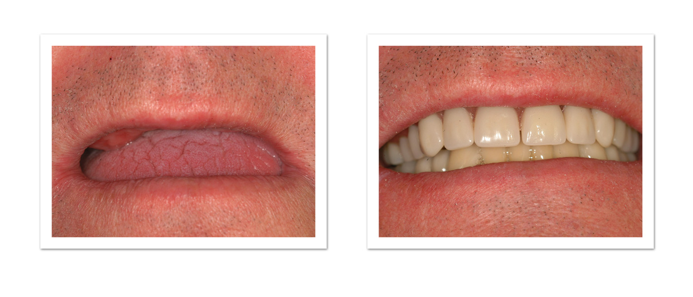

When many of your teeth are loose or painful, you may have passed the point where you can save them. This is usually caused by advanced periodontal disease. Periodontal disease causes bone to be lost, and if it's not caught in time, there's so little support for the teeth they have to be removed. Removing your teeth and replacing them with a denture may be the best way to eliminate the infection and restore the health of your mouth.
" I am resigned to getting partial dentures. I realise they are uncomfortable, but what I do fear more than the pain of removal, is the return to work. Will I sound like Daffy Duck? Are they horribly uncomfortable? I know I need them, but I am concerned. ",
You will be surprised by how well you get on with the dentures. Millions of people have them and cope very well. Some useful tips and advice are as follows:
1. It can take about one week for every decade old you are to get used to new dentures. It is important not to panic if they feel loose when you first get them- they should tighten up when they settle. Also your mouth learns to control them but this takes time.
2. Often they will rub the gums a bit at first, meaning that they need to be adjusted by the dentist - so if you get an ulcer, this does not mean that you cannot or will not be able to wear them - just call the dentist!
3. When you first get them talk to the plants/pets etc as much as possible to get used to talking with them in.
4. Practice counting from 65 up to 70 as these sounds can be the hardest to get used to. Remember that your tongue and cheeks etc. are suddenly being asked to move in a different way- give them a chance to learn!!
5. You should usually take them out at night- but keep them in for the first 1 or 2, as this will let your mouth get used to them being there. (You might find them in the sheets in the morning though!). Keeping them in for the first 24 hours also helps if you have had teeth taken out as it ensures that the gums heal in the best way.
6. It is common for people to salivate more (which can affect speech) when they first get a denture - basically because the mouth thinks that the plates are big gob-stoppers!!! Its not very often that a dentist will advise you to have sweets but it helps to have something like boiled sweets or mints (try to get SUGAR-FREE!!) for the first few hours of wearing your new plates. When you finish the sweet the salivation should naturally decrease and the mouth will not think that your dentures are food also!
7. It sounds like you are getting immediate dentures (i.e. teeth extracted and the plates fitted on the same day). You will probably need the dentures relined, or new ones made in about 3 months. This is because the dentures are made as a ‘ guess ’, of what the gums will be like after the teeth come out. So if you do feel that you are struggling a bit, things WILL be improved upon in 3 months.

An upper partial denture can be a good way to replace missing teeth. When you save your remaining teeth and have a partial denture, you'll chew better, look better, and have a healthier mouth. The metal clasps fit around the anchor teeth and hold the partial in place. A partial denture prevents several problems. By filling in spaces, it stops neighboring teeth from shifting. When missing teeth aren't placed, it can set off a chain reaction that can result in cavities and periodontal disease. It also helps balance your bite. This means you'll chew better and have a healthier jaw joint. Partials also add support to your cheeks and lips. This support is necessary to speak clearly and look your best. Some temporary problems are a normal part of adjusting to your new partial denture. At first, it may tip when you chew. You may notice increased salivary flow. It may seem bulky. You may gag a little. Your tongue will feel crowded, and you may have difficulty speaking. But don't worry. As you get used to your new partial, these problems will go away. With time and practice, you'll make the adjustment and be eating with confidence.